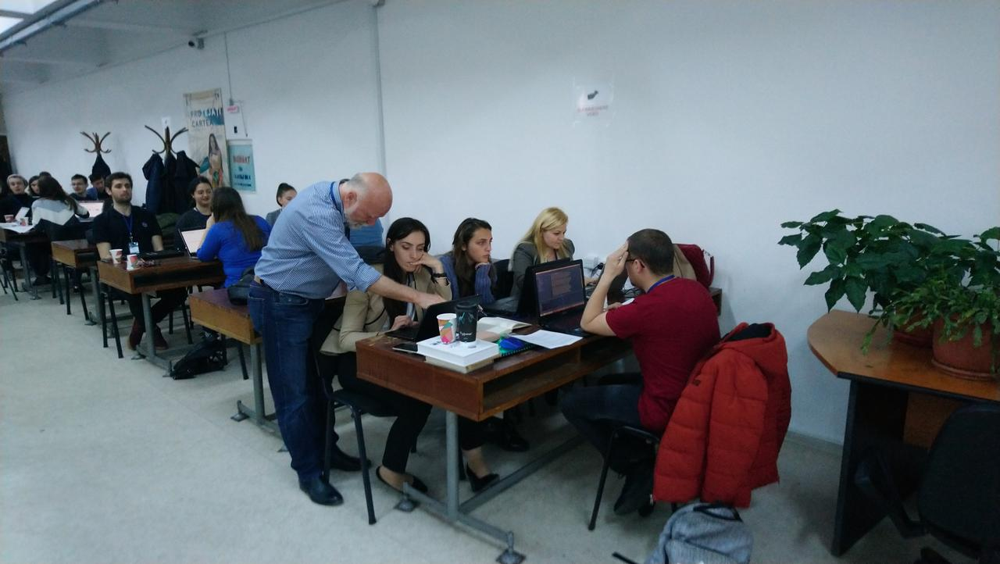

EUROLAN 2019 Summer School
I started drafting this post in the last day of EUROLAN 2019 Summer School; while the participants were about to take the last Kahoot! quiz and fill the feedback form.
This was the first summer school where I was on the other side — in the organization committee and I have to admit that I liked it very much.
I liked the joy and enthusiasm of the participants which were as if they embarked for an adventure. Is some sense, this was an adventure for them, which could be seen from their attitude for handling the exercices — each task was tackled with maximum involvment and seriosity by everyone.

The exercices were meant to cover a wide range of activities for computational linguistics — from manually annotating a small corpus of trainig phrases to training a machine learning model.
The mission of our micro-team (Tiberiu Boroș, Cristian Pădurariu and myself) was to teach the participants how to train a Machine Learning model using NLP-Cube - a Natural Language Processing Framework where Tiberiu is the main contributor.
Knowing that there will be participants with both Windows and Mac OS, we settled in our discussions on enclosing NLP-Cube into a Docker image which would be built by each participant in order to train the model.
Unfortunately, despite our best efforts and the great presentation made by Tiberiu the results were disastrous — the laptops of over a half of participants didn't met Docker requirements; from the reamaining people a lot did not have enough disk space for the various transformations of the corpus and additional utilities. Overall, only a few persons were able to start the training process.
At the end of the school, the organization committee setup a small contest with for the participants: each team would have to come up with an idea of an application and after refining the idea they would get exactly 5 minutes to pitch the idea to the ad-hoc jury. The application was subject to the constraints of being somewhat feasible to develop and should use as many topics taught during the summer school as possible.
The ideas were great; the one that I liked the most was about an application that would do speech recognition for people suffering from some form of heavy speech impediment.
When a part of the jury went to deliberate over which team should get which prize, Gabriela Haja started the closing speech. It was a simple, elegant and beautifull talk where she praised the ideas of the participants but also advised them that they would need to work hard on the ideas themselves and on the skills of the authors in order to see their idea put to practice.
Overall it was a great experience and I'm gratefull for the opportunity to participate. And now with the school long gone, I'm reviewing/archiving the to-do-list of activities for the summer school and building the list of…
Lessons learned
- Infrastructure is a problem
- We learned the hard way that not everyone has high-end laptops that can run resource-heavy applications.
- Murphy's law is still applicable
- "Anything that can go wrong, will go wrong", Murphy's las states. And indeed, we had a participant that couldn't build the docker image for some reason but when we tried to load an already built image into docker via a USB stick, the USB port failed.
- Think and tailor your workshop for the audience
- Being heavily involvment into software development, Tiberiu and I made some wrong assumptions — people will know how to install Docker on their machines, the participants will know how to execute the command lines we provided etc. The vast majority of the participants were linguists at core and such tasks that are perceived as trivial by us are surely not trivial for them.
- You learn a lot while teaching
- This is something that cannot be overstated. I knew I will be learning a lot of new stuff from the collaboration with Tiberiu (I did not knew
NLP-Cubeexisted befor this summer school) but to my great suprise I also learned a great deal of stuff just by being present and helping people. - Allow yourself to fail
- The dissapointing results of our endeavor to train a Machine Learning model had an impact on my morale but while discussing with the more experienced members of the committee
Comments
Comments powered by Disqus